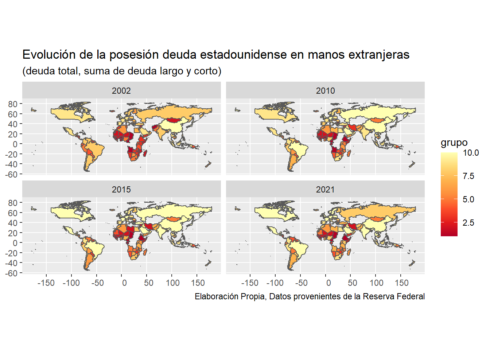

Analizando la evolución de las variables mas importantes en lo relacionado a la sostenibilidad de la deuda y en donde se ha ido posicionando esa deuda internacionalmente y ver las posibles causas de un default
trabajo BigData
Deuda EE.UU
Autor/a
Luis Pérez (luispepa@uv.es)
Fecha de publicación
2 de enero de 2023
Introducción
A lo largo del presente trabajo se va a realizar una explicación del concepto de deuda soberana y todas aquellas variables que influyen en esta. Además, este estudio se centra en la deuda soberana de Estados Unidos, en adelante EEUU, así como su evolución histórica, sostenibilidad de la deuda y principales tenedores de deuda y su evolución a lo largo del siglo XXI.
Durante la crisis financiera de 2008 y su posterior impacto en las arcas públicas, la deuda pública ha sido un continuo punto de debate entre economistas de diferentes escuelas, dado que muchos abogaban por su progresiva eliminación, centrando así las políticas públicas en reducirla, mientras que otros defendían que no era algo de lo que preocuparse dado el nivel de los tipos de interés. En EEUU, este debate era menor, dada la sostenibilidad de la deuda en el largo plazo, tal y como se va a detallar a continuación, y la posición económico-financiera de EEUU respecto al resto del mundo, en gran medida gracias a que su moneda, el dólar, es moneda de referencia mundial.
Sin embargo, con la crisis económica derivada de la COVID-19, este debate pasó a un segundo plano, puesto que la mayoría de los países optaron por elevar su deuda pública, mediante políticas fiscales expansivas, amparadas por la actitud de los bancos centrales. Estas medidas tendrán un impacto en la inflación que, como se va a mostrar, puede contribuir a reducir la deuda pública, puesto que tras la pandemia, muchas economías occidentales presentan grandes niveles de deuda, lo cual podría desembocar, nuevamente, en una crisis de deuda soberana.
Los datos del trabajo han sido extraídos de la pagina web de la Reserva Federal de San Luis FRED
Para la elaboración de este pequeño trabajo, se utilizara datos en formatos csv.
Código
# PAQUETES UTILIZADOSlibrary(rio)library(dplyr)library(tidyr)library(tidyverse)library(ggplot2)library(dygraphs)library(xts)library(patchwork)library(png)library(plotly)library(ggthemes)library("rnaturalearth")library("rnaturalearthdata")library(gt)library(glue)library(countrycode)# CARGANDO DATOSdatos <-read.csv("./datos/shlhistdat.csv.xls") bola<-read.csv("./datos/fredgraph.csv")deuda<-read.csv ("./datos/fredgraph_1.csv")bola <- janitor::clean_names(bola)deuda<- janitor::clean_names(deuda)# DANDOLES UN FORMATO PARA PODER TRABAJARaa <- datos %>%slice(c(8:257)) %>%select(-1) %>%select(1,5,9,15,19,25,29,35,39,45,49)aa <- datos %>%slice(c(8:257)) %>%select(-c(X.225:last_col()))aa_1 <- aa %>%slice(1) %>%as.character()aa_2 <- aa %>%slice(2) %>%as.character()aa_3 <- aa %>%slice(3) %>%as.character()aa_4 <-paste0(aa_1, "---", aa_2, " - ", aa_3)aa_4[1] <-"codigos"aa_4[2] <-"paises"names(aa) <- aa_4aa <- aa %>%slice(-1, -2, -3)bb <- aa %>%pivot_longer(cols =3:226)cc <- bb %>%separate(name, into =c("periodo", "indicador"), sep ="---")cc <- cc %>%separate(periodo, into =c("mes", "anyo"), sep =" ")cc <- cc %>%mutate(value =ifelse(value =="*" , 0, value))dd <- cc %>%pivot_wider(names_from ="indicador")df <- dd %>%select(codigos, paises, anyo, `Long-term - Treasury Debt`,`Short-term - Treasury debt`) %>%drop_na() %>%rename(largo =`Long-term - Treasury Debt`, corto =`Short-term - Treasury debt` )df$paises <-ifelse(df$paises=="Russia (11)","Russia",df$paises) df$paises <-ifelse(df$paises=="China (21)","China",df$paises)df$largo <-as.numeric( gsub(",", "", df$largo)) df$corto <-as.numeric( gsub(",", "", df$corto))total <- df %>%mutate( deuda_total = largo + corto) %>%mutate(paises.x = stringr::str_remove(paises, "\\(.\\)|\\(..\\)"))total <- total %>%select(-2) %>%rename(paises=paises.x)
Marco Conceptual
Con la finalidad de que se pueda entender las explicaciones de este trabajo, a continuación, se expone de una manera esquematizada que significa cada uno de los conceptos que van a utilizarse a lo largo del mismo. Además, permite entender de una manera general el concepto de deuda soberana y los factores que influyen sobre esta.
Por deuda soberana se entiende como la deuda que tiene un determinado país con sus acreedores, generalmente otro país. Por tanto, también puede definirse como la deuda pública que contrae el Estado, con el fin de poder endeudarse en los mercados financieros, lo cual puede realizar mediante la emisión de títulos o bonos. La evolución temporal del stock de deuda pública en % del PIB de se puede descomponer en 3 componentes:
\[ \vartriangle b_t = -d_t + \frac{(i_t-g_t)}{(1+g_t)}b_{t_-1} + adf_t\] donde ∆b es la variación del stock de deuda en del PIB, dt el déficit (-) o superávit (+) público primario (en % del PIB, el déficit público total sin incluir intereses de la deuda), de la deuda pública (tipos de interés implícitos de la deuda pública, medidos por los pagos de intereses actuales de la deuda pública como % del stock de deuda pública al final de t-1), gt la tasa de crecimiento nominal de la economía (crecimiento real + tasa de inflación) y adft el componente “ajuste déficit-deuda”.
La expresión implica que si se quiere estabilizar el stock de deuda pública en relación al PIB se deben de dar tres condiciones no excluyentes que se reflejan en los tres términos de la derecho de la ecuación: (a) se tiene que generar superávit primarios (componente que recoge el “ajuste fiscal”), dt; 0; (b) o que la tasa de crecimiento nominal de la economía debe ser superior al tipo de interés nominal “implícito” de la deuda pública o eliminar/reducir el efecto del ajuste déficit-deuda (adft = 0)
El efecto bola de nieve se produce cuando la tasa de crecimiento nominal de la economía es inferior al tipo de interés nominal “implícito” de la deuda pública gt < it, de no producirse se daría como resultado una insostenibilidad de la deuda a largo plazo, ya que estaríamos observando como el coste de la deuda es mayor que la capacidad de obtener ingresos.
Por déficit primario se entiende como el saldo negativo resultante de la diferencia entre los gastos corrientes de un Estado y su recaudación de impuestos. Es decir, recoge los gastos e ingresos públicos sin contar los pagos de intereses de la deuda pública.
Los tipos de interés son el coste de oportunidad de tener dinero, es decir, es la rentabilidad que ofrecen otros activos al dinero, como los bonos. En este trabajo se analiza el tipo de interés ofrecido por la FED para los bonos a largo plazo, no obstante, también se estudia los tenedores de deuda a corto plazo.
La inflación es un proceso de aumento general del nivel de precios de una economía. Puede ser producido por varios factores a corto plazo, como shocks de oferta, tipos impositivos o aumentos de la oferta monetaria. Sin embargo, a largo plazo siempre se trata de un fenómeno monetario.
La deuda en el siglo XXI
Desde la última década del siglo XX, la deuda pública ha crecido por debajo de la tendencia de crecimiento del PIB de la economía estadounidense hasta la crisis financiera de 2008, donde la deuda pública se dispara, llegando ésta en 2011 a superar la tendencia de crecimiento del PIB, lo que se mantendría hasta el año 2018 debido a la gran recuperación económica mundial. Sin embargo, tal recuperación y descenso de la deuda pública será limitado, ya que en 2020 con el estallido de la pandemia de la COVID-19 se dispara ésta muy por encima de la tendencia.
Como se puede observar en el Gráfico 2 , en EEUU, no se produce el efecto bola de nieve puesto que el crecimiento de la economía estadounidense es superior al tipo de interés de la Reserva Federal a lo largo de la historia, existiendo una mayor complicación a finales de los 80 y con la crisis financiera del año 2008. Por tanto, podría afirmarse que se garantiza la sostenibilidad de la deuda pública estadounidense a pesar de las tensiones que se producen cuando se da una crisis.
Código
# Bola de Nievebola$date <-as.Date(bola$date)interes <-xts(bola$fedfunds, order.by = bola$date, frequency =365 )gdp <-xts(bola$gdp_pch, order.by = bola$date, frequency=365)bola_grafica <-cbind(gdp, interes)dygraph(bola_grafica, ylab="Δ Pib, Tipo de interes",main ="Evolución Efecto Bola de Nieve") %>%dyOptions(colors =c("blue", "#B52A0C")) %>%dySeries("gdp", label ="ΔPIB") %>%dySeries("interes", label="tipo de interes")%>%dyShading(from ="2008-1-1", to ="2009-10-1")%>%dyShading(from ="2019-1-1", to ="2020-1-1")%>%dyShading(from ="2001-1-1", to ="2001-12-1")%>%dyRangeSelector()
Tenedores de la deuda
En este apartado se analizará los tenedores internacionales de deuda estadounidense, debido a que esto puede llegar a ser interesante en el hipotético caso de que la economía más fuerte del mundo atravesará dificultades para hacer el frente a sus deudas.
En la Tabla 1 y en la Tabla 2 podemos observar los países que mayor cantidad de deuda estadounidense poseían en 2002 y en 2021 y unas de las cosas que podemos apreciar que los mayores tenedores de deuda son Japón, China y Reino Unido. Pero lo más interesante no es eso, sino el incremento de deuda que han experimentado casi todos los países, que podemos observar en la Tabla 3.
paises_mas_deuda_largo<- df %>%drop_na() %>%filter(anyo==2021) %>%slice_max(largo, n=10)paises_mas_deuda_corto <- df %>%drop_na() %>%filter(anyo==2021) %>%slice_max(corto, n=10)paises_mas_deuda_total<- total %>%drop_na() %>%filter(anyo==2021) %>%slice_max(deuda_total, n=11) %>%slice(-1)paises_mas_deuda_total_previo <- total %>%drop_na() %>%filter(anyo==2002) %>%slice_max(deuda_total, n=11) %>%slice(-1)crecimiento <- total %>%drop_na() %>%filter(anyo==2021| anyo==2002) %>%pivot_wider(names_from = anyo, values_from = deuda_total)crecimiento$`2002`<-ifelse( is.na(crecimiento$`2002`),lead(crecimiento$`2002`),crecimiento$`2002`)crecimiento <-crecimiento[!is.na(crecimiento$`2021`),]crecimiento <- crecimiento %>%group_by(paises)%>%mutate(tasa=(`2021`-`2002`)/`2002`*100)paises_destacados <- crecimiento %>%filter( paises %in%c("Venezuela","Turkey","Bulgaria", "Argentina", "Marruecos", "Kenya", "Honduras", "Qatar", "Ireland" )) %>%arrange(tasa) %>%select(4:7)df_flags <- paises_mas_deuda_total_previo %>%#- fipsmutate(iso2 =countrycode(sourcevar = paises, origin ="country.name", destination ="iso2c", warn =FALSE)) %>%mutate(iso2 =tolower(iso2)) %>%# glue:glue() : pega texto con "código", con objetos de R: los objetos tienen que ir entre corchetes {}mutate(flag_URL = glue::glue('https://hatscripts.github.io/circle-flags/flags/{iso2}.svg'), .before=paises) tt_flags <- df_flags%>%select(flag_URL,paises,deuda_total,corto,largo) %>%gt()tt_flags <- tt_flags %>%tab_header(title =md("**Posición de deuda estadounidense en manos internacionales**"),subtitle =md("**Paises con mayor posesion de deuda total en 2002**"))tt_flags <- tt_flags %>%cols_label(corto =md("**Deuda a corto plazo**"), largo=md("**deuda a largo plazo**"), deuda_total =md("**Deuda Total**"), paises=md("**Paises**"), flag_URL=md("**Banderas**")) %>%tab_source_note(source_note ="Elaboración propia, Fuente: Treasury Goverment of USA") tt_flags <- tt_flags %>%fmt_number(columns =c(deuda_total, corto, largo),decimals =2, sep_mark =".", dec_mark =",") tabla<- tt_flags %>% gt::text_transform(locations =cells_body(columns =c(flag_URL)), fn =function(x){gt::web_image(x, height =30)})tabla<- tabla %>%opt_stylize(style =1, color ="red") #- redtabla
Posición de deuda estadounidense en manos internacionales
Paises con mayor posesion de deuda total en 2002
Banderas
Paises
Deuda Total
Deuda a corto plazo
deuda a largo plazo
Japan
349.440,00
89.555,00
259.885,00
China
96.457,00
1.257,00
95.200,00
United Kingdom
50.143,00
4.413,00
45.730,00
Hong Kong
43.093,00
5.645,00
37.448,00
Germany
39.311,00
1.413,00
37.898,00
Taiwan
36.810,00
2.323,00
34.487,00
Switzerland
34.513,00
6.309,00
28.204,00
Korea, South
32.574,00
1.988,00
30.586,00
Mexico
29.998,00
13.317,00
16.681,00
International & Regional Orgs.
24.786,00
6.517,00
18.269,00
Elaboración propia, Fuente: Treasury Goverment of USA
Código
# Tabladf_flags <- paises_mas_deuda_total %>%#- fipsmutate(iso2 =countrycode(sourcevar = paises, origin ="country.name", destination ="iso2c", warn =FALSE)) %>%mutate(iso2 =tolower(iso2)) %>%# glue:glue() : pega texto con "código", con objetos de R: los objetos tienen que ir entre corchetes {}mutate(flag_URL = glue::glue('https://hatscripts.github.io/circle-flags/flags/{iso2}.svg'), .before=paises) tt_flags <- df_flags%>%select(flag_URL,paises,deuda_total,corto,largo) %>%gt()tt_flags <- tt_flags %>%tab_header(title =md("**Posición de deuda estadounidense en manos internacionales**"),subtitle =md("**Paises con mayor posesion de deuda total en 2021**"))tt_flags <- tt_flags %>%cols_label(corto =md("**Deuda a corto plazo**"), largo=md("**deuda a largo plazo**"), deuda_total =md("**Deuda Total**"), paises=md("**Paises**"), flag_URL=md("**Banderas**")) %>%tab_source_note(source_note ="Elaboración propia, Fuente: Treasury Goverment of USA") tt_flags <- tt_flags %>%fmt_number(columns =c(deuda_total, corto, largo),decimals =2, sep_mark =".", dec_mark =",") tabla<- tt_flags %>% gt::text_transform(locations =cells_body(columns =c(flag_URL)), fn =function(x){gt::web_image(x, height =30)})tabla<- tabla %>%opt_stylize(style =1, color ="red") #- redtabla
Posición de deuda estadounidense en manos internacionales
Paises con mayor posesion de deuda total en 2021
Banderas
Paises
Deuda Total
Deuda a corto plazo
deuda a largo plazo
Japan
1.278.804,00
65.544,00
1.213.260,00
China
1.061.132,00
3.337,00
1.057.795,00
United Kingdom
530.079,00
65.849,00
464.230,00
Ireland
323.112,00
131.344,00
191.768,00
Luxembourg
301.585,00
101.909,00
199.676,00
Switzerland
300.923,00
31.163,00
269.760,00
Cayman Islands
260.596,00
119.593,00
141.003,00
Brazil
249.049,00
605,00
248.444,00
Taiwan
239.249,00
5.100,00
234.149,00
Belgium
227.007,00
31.519,00
195.488,00
Elaboración propia, Fuente: Treasury Goverment of USA
En la Tabla 3, se han excluido aquellos países que no tenían deuda en 2002, debido a que si se hubiesen incluido su tasa de crecimiento fuese infinita. Una cosa que podemos apreciar es que el país que se ha deshecho de más deuda estadounidense es Venezuela, pasando de tener 7.359 millones de dólares en 2002 a tener en 2021 92 millones de dólares, es decir, una disminución del 98,75%, luego le sigue Turquía con un disminución del 79,32% , luego Bulgaria con una disminución del 77,32% y por último Argentina con una disminución del 39,38%.
Código
df_flags <- paises_destacados %>%#- fipsmutate(iso2 =countrycode(sourcevar = paises, origin ="country.name", destination ="iso2c", warn =FALSE)) %>%mutate(iso2 =tolower(iso2)) %>%# glue:glue() : pega texto con "código", con objetos de R: los objetos tienen que ir entre corchetes {}mutate(flag_URL = glue::glue('https://hatscripts.github.io/circle-flags/flags/{iso2}.svg'), .before=paises) tt_flags <- df_flags %>%select(-6) %>%gt()tt_flags <- tt_flags %>%tab_header(title =md("**Variación de la cantidad de deuda estadounidense**"),subtitle =md("**Paises con mayor variación entre 2021 y 2002**"))tt_flags <- tt_flags %>%cols_label(tasa=md("**Variación %**"), `2021`=md("**Deuda en 2021**"), `2002`=md("**Deuda en 2002**"), flag_URL=md("**Paises**")) %>%tab_source_note(source_note ="Elaboración propia, Fuente: Treasury Goverment of USA") tt_flags<- tt_flags%>%fmt_number(columns = tasa,sep_mark =".", dec_mark =",") %>%tab_footnote(footnote ="Deuda en millones de dolares estadounideses",locations =cells_column_labels(columns =`2021`)) %>%tab_footnote(footnote ="Deuda en millones de dolares estadounideses",locations =cells_column_labels(columns =`2002`))tabla<- tt_flags %>% gt::text_transform(locations =cells_body(columns =c(flag_URL)), fn =function(x){gt::web_image(x, height =30)})tabla<- tabla %>%opt_stylize(style =1, color ="red") #- redtabla
Variación de la cantidad de deuda estadounidense
Paises con mayor variación entre 2021 y 2002
Paises
Deuda en 20211
Deuda en 20021
Variación %
Venezuela
92
7359
−98,75
Turkey
2127
10283
−79,32
Bulgaria
132
582
−77,32
Argentina
2865
4726
−39,38
Ireland
323112
8205
3.837,99
Qatar
13488
155
8.601,94
Honduras
3430
4
85.650,00
Kenya
6152
2
307.500,00
Elaboración propia, Fuente: Treasury Goverment of USA
1 Deuda en millones de dolares estadounideses
Si nos fijamos estos países han sufrido crisis económicas, y tienen problemas estructurales, en el caso de Venezuela, ha tenido que irse deshaciendo de deuda estadounidense para poder ir haciendo frente al pago de su deuda, para poder aumentar sus reservas en dólares para poder intervenir en el tipo de cambio.
Por otro lado, tenemos los países que han experimentado los mayores incrementos de deuda estadounidense en los últimos 19 años. Entre ellos se encuentran: Kenia pasando de 2 millones de dólares a 6.512 millones, Honduras de 4 millones a 3.430 millones, Qatar de 155 millones a 13488 millones de dólares e Irlanda de 8.205 millones a 323.122 millones de dólares.
En los datos analizados se ha observado un incremento generalizado por parte de los países en deuda estadounidense.
Evolución de la deuda en manos internacionales

Posible Default
Un supuesto impago de la deuda estadounidense tendría graves consecuencias en el crecimiento económico, en los mercados financieros, en el desempleo, etc. llegando a poder producir:
Volver a una recesión, las primas de riesgos de los países se dispararían, puesto que los inversores buscan aquellos activos de máxima calidad capaces de proteger sus inversiones. Existencia de un pánico generalizado afectando a los mercados de renta fija y variable.
Los países emergentes contarían con una huida de capitales reduciendo la posibilidad de captar liquidez y de disfrutar de mercados financieros estables para su crecimiento.
Las importaciones de EE.UU del resto de países se reducirán, reduciendo el comercio mundial.
El incremento de los tipos en los bonos estadounidenses, se trasladarían a otros mercados internacionales, endureciendo las condiciones financieras.
El sistema financiero global se vería afectado al ponerse en cuestión el principal activo sin riesgo del mundo, llegando al cierre de los mercados.
China y Japón, principales acreedores de EE.UU, dado que acumulan aproximadamente el 50% de los bonos estadounidenses, serían los países más perjudicados. Pero además, afectaría a países pequeños que han incrementado sus posiciones de deuda.
Todas estas repercusiones en terceros, tendría un efecto de retroalimentación que afectaría de nuevo a EE.UU.
Conclusiones
La economía estadounidense es una de las más fuertes del mundo, pero tal y como se ha abordado a lo largo del trabajo, puede estar sentando las bases para una crisis de deuda en el largo plazo. El contexto actual de alza de los tipos de interés para frenar los efectos adversos de la inflación, puede llevar a EEUU a entrar en una recesión, lo cual podría implicar tensiones en la sostenibilidad de la deuda.
La alta exposición de la mayoría de economías internacionales a los activos de deuda americana, supone un riesgo para la estabilidad económica mundial, sin embargo, el poder y el compromiso de respaldar dicha deuda por los EEUU es muy elevado, dado el potencial impacto que tendría sobre la economía mundial.
Por tanto, a pesar de las tensiones que experimente la economía estadounidense, ya sea por guerras, pandemias o crisis financieras, la deuda soberana americana es sostenible a largo plazo, a pesar de que en ocasiones tengan que realizarse revisiones del techo de deuda para poder hacer frente la gestión económica del país.
Finalizar concluyendo que la evolución de la posesión de activos de deuda en manos de terceros países ha aumentado exponencialmente, lo que muestra el importante aumento de deuda realizado por los EEUU, y que muchos países han aprovechado para adquirirlos mejorando así su posición internacional. Mientras, aquellos países con mayores dificultades se han desprendido de dichos activos. En otras palabras, la deuda soberana americana es un activo de referencia, valioso y respaldado.
Ejecutar el código
---title: "ESTADOS UNIDOS Y LA DEUDA SOBERANA"description: | Analizando la evolución de las variables mas importantes en lo relacionado a la sostenibilidad de la deuda y en donde se ha ido posicionando esa deuda internacionalmente y ver las posibles causas de un defaultauthor: Luis Pérez (luispepa@uv.es) #--date: 2023-01-02 #--categories: [trabajo BigData, Deuda EE.UU] #--image: "./imagenes/usa.png"title-block-banner: true #- {true, false, "green","#AA0000"}title-block-banner-color: "#FFFFFF" #-"#FFFFFF" toc: truetoc-location: lefttoc-depth: 3smooth-scroll: trueformat: html: maintfont: serif #backgroundcolor: "#F1F3F4" #standalone: true link-external-newwindow: true #css: ./assets/my_css_file.css #- CUIDADO!!!!code-tools: truecode-link: true---# IntroducciónA lo largo del presente trabajo se va a realizar una explicación del concepto de deuda soberana y todas aquellas variables que influyen en esta. Además, este estudio se centra en la deuda soberana de Estados Unidos, en adelante EEUU, así como su evolución histórica, sostenibilidad de la deuda y principales tenedores de deuda y su evolución a lo largo del siglo XXI.Durante la crisis financiera de 2008 y su posterior impacto en las arcas públicas, la deuda pública ha sido un continuo punto de debate entre economistas de diferentes escuelas, dado que muchos abogaban por su progresiva eliminación, centrando así las políticas públicas en reducirla, mientras que otros defendían que no era algo de lo que preocuparse dado el nivel de los tipos de interés. En EEUU, este debate era menor, dada la sostenibilidad de la deuda en el largo plazo, tal y como se va a detallar a continuación, y la posición económico-financiera de EEUU respecto al resto del mundo, en gran medida gracias a que su moneda, el dólar, es moneda de referencia mundial.Sin embargo, con la crisis económica derivada de la COVID-19, este debate pasó a un segundo plano, puesto que la mayoría de los países optaron por elevar su deuda pública, mediante políticas fiscales expansivas, amparadas por la actitud de los bancos centrales. Estas medidas tendrán un impacto en la inflación que, como se va a mostrar, puede contribuir a reducir la deuda pública, puesto que tras la pandemia, muchas economías occidentales presentan grandes niveles de deuda, lo cual podría desembocar, nuevamente, en una crisis de deuda soberana.# Datos del trabajo::: {.panel-tabset}## Datos usadosLos datos del trabajo han sido extraídos de la pagina web de la Reserva Federal de San Luis [FRED](https://fred.stlouisfed.org/){target="_blank"}Para la elaboración de este pequeño trabajo, se utilizara datos en formatos csv.## Códigos```{r}#| code-fold: true# PAQUETES UTILIZADOSlibrary(rio)library(dplyr)library(tidyr)library(tidyverse)library(ggplot2)library(dygraphs)library(xts)library(patchwork)library(png)library(plotly)library(ggthemes)library("rnaturalearth")library("rnaturalearthdata")library(gt)library(glue)library(countrycode)# CARGANDO DATOSdatos <-read.csv("./datos/shlhistdat.csv.xls") bola<-read.csv("./datos/fredgraph.csv")deuda<-read.csv ("./datos/fredgraph_1.csv")bola <- janitor::clean_names(bola)deuda<- janitor::clean_names(deuda)# DANDOLES UN FORMATO PARA PODER TRABAJARaa <- datos %>%slice(c(8:257)) %>%select(-1) %>%select(1,5,9,15,19,25,29,35,39,45,49)aa <- datos %>%slice(c(8:257)) %>%select(-c(X.225:last_col()))aa_1 <- aa %>%slice(1) %>%as.character()aa_2 <- aa %>%slice(2) %>%as.character()aa_3 <- aa %>%slice(3) %>%as.character()aa_4 <-paste0(aa_1, "---", aa_2, " - ", aa_3)aa_4[1] <-"codigos"aa_4[2] <-"paises"names(aa) <- aa_4aa <- aa %>%slice(-1, -2, -3)bb <- aa %>%pivot_longer(cols =3:226)cc <- bb %>%separate(name, into =c("periodo", "indicador"), sep ="---")cc <- cc %>%separate(periodo, into =c("mes", "anyo"), sep =" ")cc <- cc %>%mutate(value =ifelse(value =="*" , 0, value))dd <- cc %>%pivot_wider(names_from ="indicador")df <- dd %>%select(codigos, paises, anyo, `Long-term - Treasury Debt`,`Short-term - Treasury debt`) %>%drop_na() %>%rename(largo =`Long-term - Treasury Debt`, corto =`Short-term - Treasury debt` )df$paises <-ifelse(df$paises=="Russia (11)","Russia",df$paises) df$paises <-ifelse(df$paises=="China (21)","China",df$paises)df$largo <-as.numeric( gsub(",", "", df$largo)) df$corto <-as.numeric( gsub(",", "", df$corto))total <- df %>%mutate( deuda_total = largo + corto) %>%mutate(paises.x = stringr::str_remove(paises, "\\(.\\)|\\(..\\)"))total <- total %>%select(-2) %>%rename(paises=paises.x)```:::# Marco ConceptualCon la finalidad de que se pueda entender las explicaciones de este trabajo, a continuación, se expone de una manera esquematizada que significa cada uno de los conceptos que van a utilizarse a lo largo del mismo. Además, permite entender de una manera general el concepto de deuda soberana y los factores que influyen sobre esta.Por deuda soberana se entiende como la deuda que tiene un determinado país con sus acreedores, generalmente otro país. Por tanto, también puede definirse como la deuda pública que contrae el Estado, con el fin de poder endeudarse en los mercados financieros, lo cual puede realizar mediante la emisión de títulos o bonos.La evolución temporal del stock de deuda pública en % del PIB de se puede descomponer en 3 componentes:$$ \vartriangle b_t = -d_t + \frac{(i_t-g_t)}{(1+g_t)}b_{t_-1} + adf_t$$donde ∆b es la variación del stock de deuda en del PIB, dt el déficit (-) o superávit (+) público primario (en % del PIB, el déficit público total sin incluir intereses de la deuda), de la deuda pública (tipos de interés implícitos de la deuda pública, medidos por los pagos de intereses actuales de la deuda pública como % del stock de deuda pública al final de t-1), gt la tasa de crecimiento nominal de la economía (crecimiento real + tasa de inflación) y adft el componente “ajuste déficit-deuda”. La expresión implica que si se quiere estabilizar el stock de deuda pública en relación al PIB se deben de dar tres condiciones no excluyentes que se reflejan en los tres términos de la derecho de la ecuación: (a) se tiene que generar superávit primarios (componente que recoge el “ajuste fiscal”), dt; 0; (b) o que la tasa de crecimiento nominal de la economía debe ser superior al tipo de interés nominal “implícito” de la deuda pública o eliminar/reducir el efecto del ajuste déficit-deuda (adft = 0)El *efecto bola* de nieve se produce cuando la tasa de crecimiento nominal de la economía es inferior al tipo de interés nominal “implícito” de la deuda pública gt < it, de no producirse se daría como resultado una insostenibilidad de la deuda a largo plazo, ya que estaríamos observando como el coste de la deuda es mayor que la capacidad de obtener ingresos. Por *déficit primario* se entiende como el saldo negativo resultante de la diferencia entre los gastos corrientes de un Estado y su recaudación de impuestos. Es decir, recoge los gastos e ingresos públicos sin contar los pagos de intereses de la deuda pública.Los *tipos de interés* son el coste de oportunidad de tener dinero, es decir, es la rentabilidad que ofrecen otros activos al dinero, como los bonos. En este trabajo se analiza el tipo de interés ofrecido por la FED para los bonos a largo plazo, no obstante, también se estudia los tenedores de deuda a corto plazo.La *inflación* es un proceso de aumento general del nivel de precios de una economía. Puede ser producido por varios factores a corto plazo, como shocks de oferta, tipos impositivos o aumentos de la oferta monetaria. Sin embargo, a largo plazo siempre se trata de un fenómeno monetario.# La deuda en el siglo XXIDesde la última década del siglo XX, la deuda pública ha crecido por debajo de la tendencia de crecimiento del PIB de la economía estadounidense hasta la crisis financiera de 2008, donde la deuda pública se dispara, llegando ésta en 2011 a superar la tendencia de crecimiento del PIB, lo que se mantendría hasta el año 2018 debido a la gran recuperación económica mundial. Sin embargo, tal recuperación y descenso de la deuda pública será limitado, ya que en 2020 con el estallido de la pandemia de la COVID-19 se dispara ésta muy por encima de la tendencia.```{r}#| code-fold: true# Grafico tendenciadeuda <- deuda %>%rename(deuda_pib = gfdegdq188s, tendencia = usalorsgptdstsam)deuda<- deuda %>%mutate( date1= date) %>%separate( col= date1, into=c('anyo', 'mes','dia'), sep='-')deuda$date <-paste (deuda$anyo, deuda$mes, sep ="-")deuda <- deuda %>%select(-5,-6)deuda$deuda_pib <- deuda$deuda_pib %>%round(2)deuda$tendencia <- deuda$tendencia %>%as.numeric() %>%round(2)p1<-ggplot(deuda) +geom_line( aes( x= date, y=tendencia, group=1 ),color ="#209EF6", size =0.5) +geom_line(aes(x=date, y=deuda_pib, group=2 ),color ="#B52A0C", size =0.5) +labs( y ="% Deuda/PIB ", x=NULL) +theme(axis.text =element_text(color ="dodgerblue"),axis.text.x =element_text(face ="italic",angle =50, vjust =1, hjust =1), axis.text.y =NULL, plot.title =element_text(size=16, hjust=0, face="italic",family ="Times New Romans", color="dodgerblue"))+labs(title ="Evolución Deuda/PIB", caption ="Elaboración propia. Fuente: Reserva Federal de EE.UU")img <-readPNG("./imagenes/usa.png", native =TRUE)p2<-p1 +scale_x_discrete(breaks =c("1970-01", "1990-01", "2022-01"))pp1<-p2 +inset_element(p=img, left =0.1, right =0.3, bottom =0.5, top =0.9) print(pp1)```Como se puede observar en el Gráfico 2 , en EEUU, no se produce el efecto bola de nieve puesto que el crecimiento de la economía estadounidense es superior al tipo de interés de la Reserva Federal a lo largo de la historia, existiendo una mayor complicación a finales de los 80 y con la crisis financiera del año 2008. Por tanto, podría afirmarse que se garantiza la sostenibilidad de la deuda pública estadounidense a pesar de las tensiones que se producen cuando se da una crisis.```{r}#| code-fold: true# Bola de Nievebola$date <-as.Date(bola$date)interes <-xts(bola$fedfunds, order.by = bola$date, frequency =365 )gdp <-xts(bola$gdp_pch, order.by = bola$date, frequency=365)bola_grafica <-cbind(gdp, interes)dygraph(bola_grafica, ylab="Δ Pib, Tipo de interes",main ="Evolución Efecto Bola de Nieve") %>%dyOptions(colors =c("blue", "#B52A0C")) %>%dySeries("gdp", label ="ΔPIB") %>%dySeries("interes", label="tipo de interes")%>%dyShading(from ="2008-1-1", to ="2009-10-1")%>%dyShading(from ="2019-1-1", to ="2020-1-1")%>%dyShading(from ="2001-1-1", to ="2001-12-1")%>%dyRangeSelector() ```# Tenedores de la deudaEn este apartado se analizará los tenedores internacionales de deuda estadounidense, debido a que esto puede llegar a ser interesante en el hipotético caso de que la economía más fuerte del mundo atravesará dificultades para hacer el frente a sus deudas. En la Tabla 1 y en la Tabla 2 podemos observar los países que mayor cantidad de deuda estadounidense poseían en 2002 y en 2021 y unas de las cosas que podemos apreciar que los mayores tenedores de deuda son Japón, China y Reino Unido. Pero lo más interesante no es eso, sino el incremento de deuda que han experimentado casi todos los países, que podemos observar en la Tabla 3.::: {.panel-tabset}## TABLA 1```{r}#| code-fold: truepaises_mas_deuda_largo<- df %>%drop_na() %>%filter(anyo==2021) %>%slice_max(largo, n=10)paises_mas_deuda_corto <- df %>%drop_na() %>%filter(anyo==2021) %>%slice_max(corto, n=10)paises_mas_deuda_total<- total %>%drop_na() %>%filter(anyo==2021) %>%slice_max(deuda_total, n=11) %>%slice(-1)paises_mas_deuda_total_previo <- total %>%drop_na() %>%filter(anyo==2002) %>%slice_max(deuda_total, n=11) %>%slice(-1)crecimiento <- total %>%drop_na() %>%filter(anyo==2021| anyo==2002) %>%pivot_wider(names_from = anyo, values_from = deuda_total)crecimiento$`2002`<-ifelse( is.na(crecimiento$`2002`),lead(crecimiento$`2002`),crecimiento$`2002`)crecimiento <-crecimiento[!is.na(crecimiento$`2021`),]crecimiento <- crecimiento %>%group_by(paises)%>%mutate(tasa=(`2021`-`2002`)/`2002`*100)paises_destacados <- crecimiento %>%filter( paises %in%c("Venezuela","Turkey","Bulgaria", "Argentina", "Marruecos", "Kenya", "Honduras", "Qatar", "Ireland" )) %>%arrange(tasa) %>%select(4:7)df_flags <- paises_mas_deuda_total_previo %>%#- fipsmutate(iso2 =countrycode(sourcevar = paises, origin ="country.name", destination ="iso2c", warn =FALSE)) %>%mutate(iso2 =tolower(iso2)) %>%# glue:glue() : pega texto con "código", con objetos de R: los objetos tienen que ir entre corchetes {}mutate(flag_URL = glue::glue('https://hatscripts.github.io/circle-flags/flags/{iso2}.svg'), .before=paises) tt_flags <- df_flags%>%select(flag_URL,paises,deuda_total,corto,largo) %>%gt()tt_flags <- tt_flags %>%tab_header(title =md("**Posición de deuda estadounidense en manos internacionales**"),subtitle =md("**Paises con mayor posesion de deuda total en 2002**"))tt_flags <- tt_flags %>%cols_label(corto =md("**Deuda a corto plazo**"), largo=md("**deuda a largo plazo**"), deuda_total =md("**Deuda Total**"), paises=md("**Paises**"), flag_URL=md("**Banderas**")) %>%tab_source_note(source_note ="Elaboración propia, Fuente: Treasury Goverment of USA") tt_flags <- tt_flags %>%fmt_number(columns =c(deuda_total, corto, largo),decimals =2, sep_mark =".", dec_mark =",") tabla<- tt_flags %>% gt::text_transform(locations =cells_body(columns =c(flag_URL)), fn =function(x){gt::web_image(x, height =30)})tabla<- tabla %>%opt_stylize(style =1, color ="red") #- redtabla```## TABLA 2 ```{r}#| code-fold: true# Tabladf_flags <- paises_mas_deuda_total %>%#- fipsmutate(iso2 =countrycode(sourcevar = paises, origin ="country.name", destination ="iso2c", warn =FALSE)) %>%mutate(iso2 =tolower(iso2)) %>%# glue:glue() : pega texto con "código", con objetos de R: los objetos tienen que ir entre corchetes {}mutate(flag_URL = glue::glue('https://hatscripts.github.io/circle-flags/flags/{iso2}.svg'), .before=paises) tt_flags <- df_flags%>%select(flag_URL,paises,deuda_total,corto,largo) %>%gt()tt_flags <- tt_flags %>%tab_header(title =md("**Posición de deuda estadounidense en manos internacionales**"),subtitle =md("**Paises con mayor posesion de deuda total en 2021**"))tt_flags <- tt_flags %>%cols_label(corto =md("**Deuda a corto plazo**"), largo=md("**deuda a largo plazo**"), deuda_total =md("**Deuda Total**"), paises=md("**Paises**"), flag_URL=md("**Banderas**")) %>%tab_source_note(source_note ="Elaboración propia, Fuente: Treasury Goverment of USA") tt_flags <- tt_flags %>%fmt_number(columns =c(deuda_total, corto, largo),decimals =2, sep_mark =".", dec_mark =",") tabla<- tt_flags %>% gt::text_transform(locations =cells_body(columns =c(flag_URL)), fn =function(x){gt::web_image(x, height =30)})tabla<- tabla %>%opt_stylize(style =1, color ="red") #- redtabla```## TABLA 3 En la Tabla 3, se han excluido aquellos países que no tenían deuda en 2002, debido a que si se hubiesen incluido su tasa de crecimiento fuese infinita. Una cosa que podemos apreciar es que el país que se ha deshecho de más deuda estadounidense es Venezuela, pasando de tener 7.359 millones de dólares en 2002 a tener en 2021 92 millones de dólares, es decir, una disminución del 98,75%, luego le sigue Turquía con un disminución del 79,32% , luego Bulgaria con una disminución del 77,32% y por último Argentina con una disminución del 39,38%.```{r}#| code-fold: truedf_flags <- paises_destacados %>%#- fipsmutate(iso2 =countrycode(sourcevar = paises, origin ="country.name", destination ="iso2c", warn =FALSE)) %>%mutate(iso2 =tolower(iso2)) %>%# glue:glue() : pega texto con "código", con objetos de R: los objetos tienen que ir entre corchetes {}mutate(flag_URL = glue::glue('https://hatscripts.github.io/circle-flags/flags/{iso2}.svg'), .before=paises) tt_flags <- df_flags %>%select(-6) %>%gt()tt_flags <- tt_flags %>%tab_header(title =md("**Variación de la cantidad de deuda estadounidense**"),subtitle =md("**Paises con mayor variación entre 2021 y 2002**"))tt_flags <- tt_flags %>%cols_label(tasa=md("**Variación %**"), `2021`=md("**Deuda en 2021**"), `2002`=md("**Deuda en 2002**"), flag_URL=md("**Paises**")) %>%tab_source_note(source_note ="Elaboración propia, Fuente: Treasury Goverment of USA") tt_flags<- tt_flags%>%fmt_number(columns = tasa,sep_mark =".", dec_mark =",") %>%tab_footnote(footnote ="Deuda en millones de dolares estadounideses",locations =cells_column_labels(columns =`2021`)) %>%tab_footnote(footnote ="Deuda en millones de dolares estadounideses",locations =cells_column_labels(columns =`2002`))tabla<- tt_flags %>% gt::text_transform(locations =cells_body(columns =c(flag_URL)), fn =function(x){gt::web_image(x, height =30)})tabla<- tabla %>%opt_stylize(style =1, color ="red") #- redtabla ```Si nos fijamos estos países han sufrido crisis económicas, y tienen problemas estructurales, en el caso de Venezuela, ha tenido que irse deshaciendo de deuda estadounidense para poder ir haciendo frente al pago de su deuda, para poder aumentar sus reservas en dólares para poder intervenir en el tipo de cambio. Por otro lado, tenemos los países que han experimentado los mayores incrementos de deuda estadounidense en los últimos 19 años. Entre ellos se encuentran: Kenia pasando de 2 millones de dólares a 6.512 millones, Honduras de 4 millones a 3.430 millones, Qatar de 155 millones a 13488 millones de dólares e Irlanda de 8.205 millones a 323.122 millones de dólares.En los datos analizados se ha observado un incremento generalizado por parte de los países en deuda estadounidense.:::# Evolución de la deuda en manos internacionales```{r, echo=FALSE}#| out-width: 100%world <-ne_countries(scale ="medium", returnclass ="sf")#- quito Antarctica y Groenlandiaworld <- world %>%filter(subregion !="Antarctica") %>%filter(admin !="Greenland")world <- world %>%select(name, iso_a3, geometry) #- me quedo solo con las 2/3 variables que me hacen falta#- primero has de unir las tablas "df" y "world". la variable de unión es by = c("iso3c" = "iso_a3")a<-inner_join(total,world, by=c("paises"="name"))#- una vez hemos unido las tablas solo hay que graficarlo con geom_sf(), pero antes has de discretizar la variable Esperanza de vida en 4 grupos. ¿te acuerdas de la funcion ntile()a <- a %>%mutate(grupo =ntile(deuda_total, 10))#- para hacer el mapa tendrás que usar geom_sf() y tendrás que usar las esteticas geometry y fill. Recuerda que las estéticas siempre van dentro de aes()zz<-a%>%drop_na()#ggplot(data=zz, aes(fill=grupo)) + geom_sf(aes(geometry=geometry)) + theme_void() +scale_fill_distiller(palette = "YlGn")#- Pregunta 11) ----------------------------------------------------------------#- Haz el mismo mapa pero un small multiple para los años 2000, 2005, 2010 y 2017zz<- zz %>%filter(anyo==2002| anyo==2010| anyo==2015| anyo==2021)%>%drop_na()ggplot(data=zz, aes(fill=grupo)) +geom_sf(aes(geometry=geometry))+facet_wrap(vars(anyo)) +scale_fill_distiller(palette ="YlOrRd")+labs(title="Evolución de la posesión deuda estadounidense en manos extranjeras ",caption ="Elaboración Propia, Datos provenientes de la Reserva Federal",subtitle ="(deuda total, suma de deuda largo y corto)", )```# Posible DefaultUn supuesto impago de la deuda estadounidense tendría graves consecuencias en el crecimiento económico, en los mercados financieros, en el desempleo, etc. llegando a poder producir:- Volver a una recesión, las primas de riesgos de los países se dispararían, puesto que los inversores buscan aquellos activos de máxima calidad capaces de proteger sus inversiones. Existencia de un pánico generalizado afectando a los mercados de renta fija y variable.- Los países emergentes contarían con una huida de capitales reduciendo la posibilidad de captar liquidez y de disfrutar de mercados financieros estables para su crecimiento.- Las importaciones de EE.UU del resto de países se reducirán, reduciendo el comercio mundial.- El incremento de los tipos en los bonos estadounidenses, se trasladarían a otros mercados internacionales, endureciendo las condiciones financieras.- El sistema financiero global se vería afectado al ponerse en cuestión el principal activo sin riesgo del mundo, llegando al cierre de los mercados.- China y Japón, principales acreedores de EE.UU, dado que acumulan aproximadamente el 50% de los bonos estadounidenses, serían los países más perjudicados. Pero además, afectaría a países pequeños que han incrementado sus posiciones de deuda.Todas estas repercusiones en terceros, tendría un efecto de retroalimentación que afectaría de nuevo a EE.UU.# ConclusionesLa economía estadounidense es una de las más fuertes del mundo, pero tal y como se ha abordado a lo largo del trabajo, puede estar sentando las bases para una crisis de deuda en el largo plazo. El contexto actual de alza de los tipos de interés para frenar los efectos adversos de la inflación, puede llevar a EEUU a entrar en una recesión, lo cual podría implicar tensiones en la sostenibilidad de la deuda.La alta exposición de la mayoría de economías internacionales a los activos de deuda americana, supone un riesgo para la estabilidad económica mundial, sin embargo, el poder y el compromiso de respaldar dicha deuda por los EEUU es muy elevado, dado el potencial impacto que tendría sobre la economía mundial.Por tanto, a pesar de las tensiones que experimente la economía estadounidense, ya sea por guerras, pandemias o crisis financieras, la deuda soberana americana es sostenible a largo plazo, a pesar de que en ocasiones tengan que realizarse revisiones del techo de deuda para poder hacer frente la gestión económica del país.Finalizar concluyendo que la evolución de la posesión de activos de deuda en manos de terceros países ha aumentado exponencialmente, lo que muestra el importante aumento de deuda realizado por los EEUU, y que muchos países han aprovechado para adquirirlos mejorando así su posición internacional. Mientras, aquellos países con mayores dificultades se han desprendido de dichos activos. En otras palabras, la deuda soberana americana es un activo de referencia, valioso y respaldado.